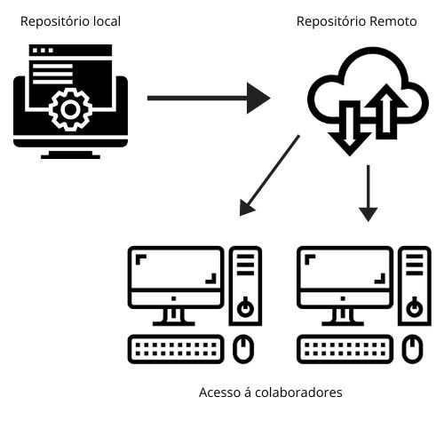
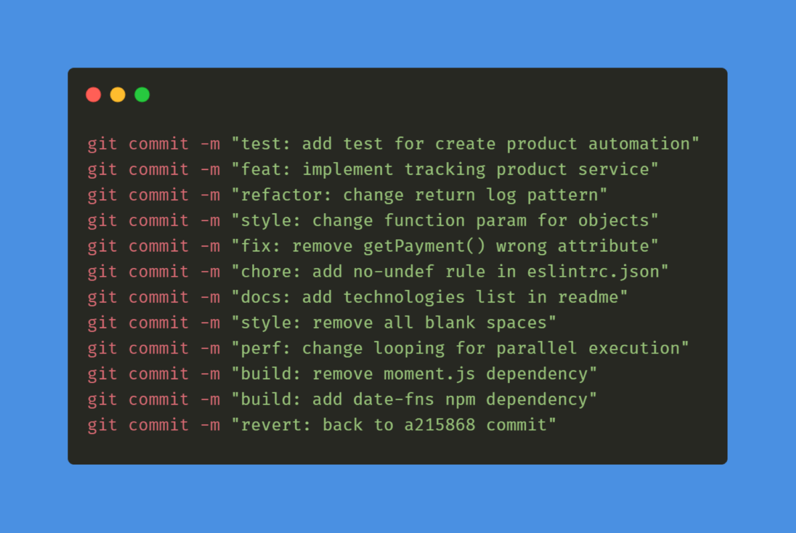

Por que usar o Git?
- Rastreamento de alterações: o Git permite rastrear cada alteração feita no arquivo, especificando quem fez a alteração e quando foi feita.
- Colaboração: o Git facilita a colaboração entre desenvolvedores em equipes. Várias pessoas podem trabalhar ao mesmo tempo no mesmo projeto.
- Ramo de desenvolvimento: o Git permite que você crie "ramos" diferentes sem afetar o código original.
- Histórico completo: mantém um histórico completo e detalhado de todas as mudanças feitas no projeto, na qual é possível também reverter para uma versão anterior do projeto sem perda de dados.

O que é um repositório Git
Ele atua como um banco de dados que registra todas as mudanças feitas nos arquivos ao longo do tempo.
Dentro de um repositório Git, você encontrará:
Arquivos do projeto: os arquivos que compõe seu projeto, como fotos,
código-fonte,
etc.
Metadados do Git: o Git mantém informações sobre o histórico de commits,
branches,
entre outros. Esses metadados são armazenados em um diretório chamado ".git" dentro do repositório.

Branches
Branches são "ramos" separados do código onde você pode trabalhar em recursos ou correções de bugs sem afetar o código principal. Isso ajuda a organizar o desenvolvimento.
Branches são "ramos" separados do código onde você pode trabalhar em recursos ou correções de bugs sem afetar o código principal. Isso ajuda a organizar o desenvolvimento.

Commits
Cada alteração feita nos arquivos do projeto é registrada em um "commit". Um commit é uma unidade fundamental no Git e inclui informações sobre as mudanças, quem fez e quando ocorreu.
Cada alteração feita nos arquivos do projeto é registrada em um "commit". Um commit é uma unidade fundamental no Git e inclui informações sobre as mudanças, quem fez e quando ocorreu.